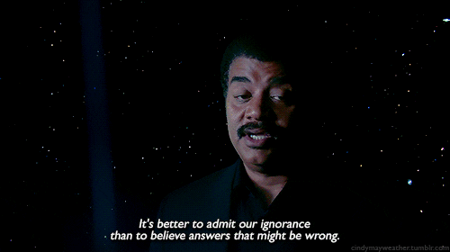

Lançada em 2018, esse documentário em formato se série dirigido por Ryan Murphy conta a história por trás do misterioso crime que levou a morte do dono de uma das grifes
de luxo mais famosas do mundo, Gianni Versace. A segunda temporada da antológia série American Crime History, O Assassinato de Gianni Versace acompanha em 9 episódios todos os passos do serial killer Andrew Cunanan até concretizar o crime que
mudaria para sempre a industria da moda.
Lançada em 2018, esse documentário em formato se série dirigido por Ryan Murphy conta a história por trás do misterioso crime que levou a morte do dono de uma das grifes de luxo mais famosas do mundo, Gianni Versace. A segunda temporada da antológia série American Crime History, O Assassinato de Gianni Versace acompanha em 9 episódios todos os passos do serial killer Andrew Cunanan até concretizar o crime que mudaria para sempre a industria da moda.
• Número de temporadas: 1 Temporada
• Emissora: FX
• Onde Assistir: Disponível na Netflix
Don't Fuck With Cats é um documentário que conta uma incomum situação. Quando um cruel e brutal vídeo de violência animal é postado na internet, a população, revoltada, decide fazer
justiça com as próprias mãos. Os videos continuam sendo produzidos e, dessa vez, até mesmo vítimas humanas aparecem mutiladas em câmera. Além das autoridades, inicia-se agora uma caça
organizada por hackers e usuários da internet de todos os países, numa corrida contra o tempo para encontrar o cruel assassino.
Don't Fuck With Cats é um documentário que conta uma incomum situação. Quando um cruel e brutal vídeo de violência animal é postado na internet, a população, revoltada, decide fazer justiça com as próprias mãos. Os videos continuam sendo produzidos e, dessa vez, até mesmo vítimas humanas aparecem mutiladas em câmera. Além das autoridades, inicia-se agora uma caça organizada por hackers e usuários da internet de todos os países, numa corrida contra o tempo para encontrar o cruel assassino.
• Número de temporadas: 1 Temporada
• Emissora: Netflix Original
• Onde Assistir: Disponível na Netflix

Apresentada pelo físico Neil deGrasse Tyson, Cosmos: Uma Odisséia no Espaço é uma homenagem a série de Carl Sagan de nome similar, e conta a história da humanidade e sua busca pelo desconhecido
no universo. Os 13 espisódios dessa série documentário possuem inúmeras imagens, teorias e dilemas que tornam o assunto cada vez mais interessante a quem assiste.

Apresentada pelo físico Neil deGrasse Tyson, Cosmos: Uma Odisséia no Espaço é uma homenagem a série de Carl Sagan de nome similar, e conta a história da humanidade e sua busca pelo desconhecido no universo. Os 13 espisódios dessa série documentário possuem inúmeras imagens, teorias e dilemas que tornam o assunto cada vez mais interessante a quem assiste.
• Número de temporadas: 1 Temporada
• Emissora: Fox
• Onde Assistir: Amazon Video